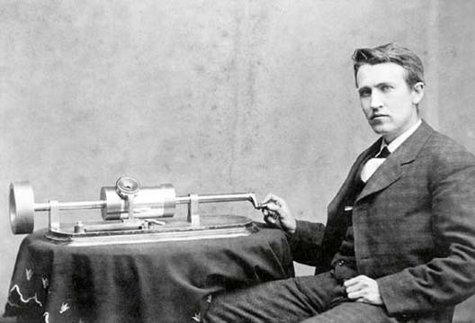
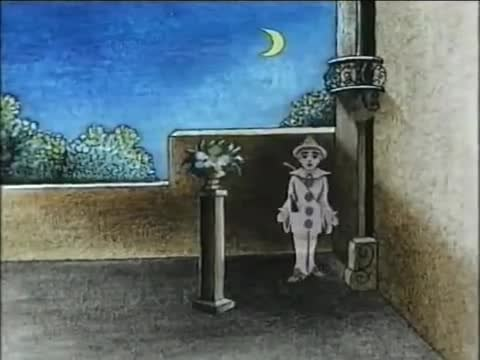
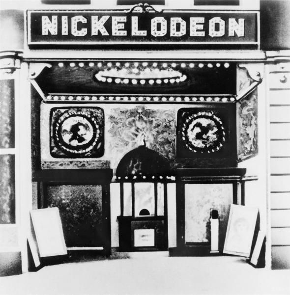
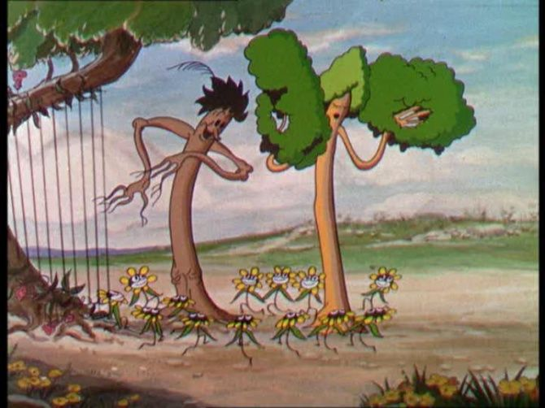
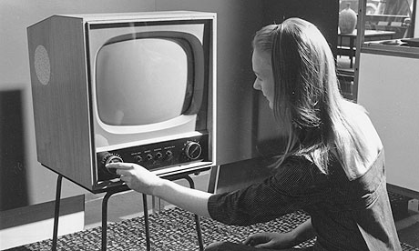

Galerie photos
GALERIE

Thomas Edison et les premiers pas du cinéma
En 1891, il crée le kinétographe, premier caméra de prise de vue.

Pauvre Pierrot, le premier dessin animé
Pauvre Pierrot, premier dessin animé de l'histoire et première projection animée sur un écran devant un public payant rassemblé (1892).
La Sortie de l'usine Lumière à Lyon
Le premier film de l'existence du cinéma.
Par Louis et Auguste Lumière.
Par Louis et Auguste Lumière.

Le premier nickelodéon
Le premier nickelodéon apparaît en novembre 1905 , lorsque l'entrepreneur John Harris se rend à Pittsburgh pour y négocier un local commercial.
Le premier film sonore
Le 6 octobre 1927 sort aux États-Unis le film Jazz singer (Le chanteur de jazz). Il s'agit du premier film parlant, chantant et musical.

Le premier film en couleur
Des arbres et des fleurs (Flowers and Trees) est le premier dessin animé en couleurs de la série Silly Symphonies.

La TV devient un objet populaire
C'est dans les années 1950 que la télévision marquent le vrai départ.
Le cinéma en relief
Tous les genres sont représentés comédie, drame, et science-fiction. La première mondiale d'un film totalement en relief a lieu le 26 novembre 1952 au Paramount d'Oakland (Californie).